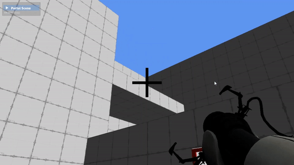

Portal Remake
Overlord Edition


Portal Teleportation
Portal Shooting
My achievements
- Animations and skinning
- Shadow Mapping
- Ambient Occlusion and Post-Processing
- Font Rendering & Text Rendering
- Particles
- Sceen picking and UI interactions
- Geometry- and Texture Shaders
- 4 distinct draw calls to render the portals.
- Portal shooting and linking system
- Portal teleportation
- Portal Physics transfers